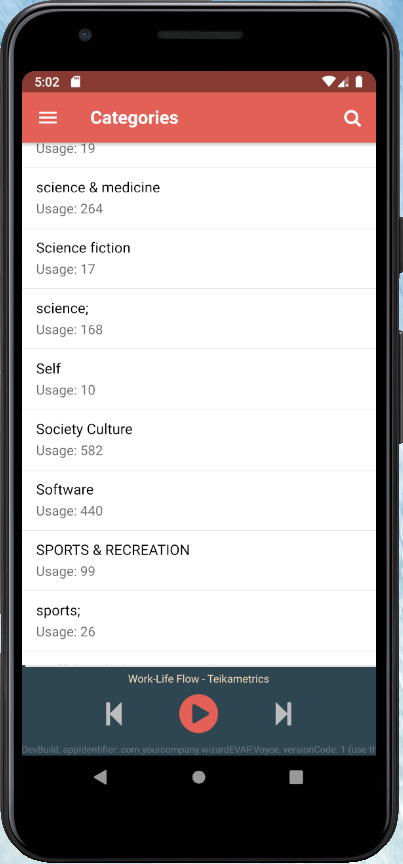
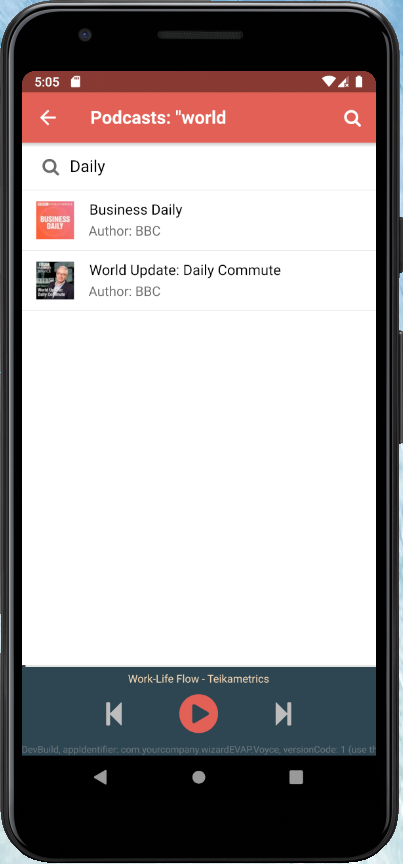

Finally, we have completed all of the implementation of our Felgo application. It's time to try and run it on real Android device. For our example, we will use Android emulator, which is provided by Android Studio.
We're starting previously create virtual Android device.
From the QtCreator we are selecting our Android Kit, and build the project. After build is complete, we hit Run, and the Voyce application should start running in the emulator.
Let's see some screenshots!
|  |  |  |  |
 |  |  |  |